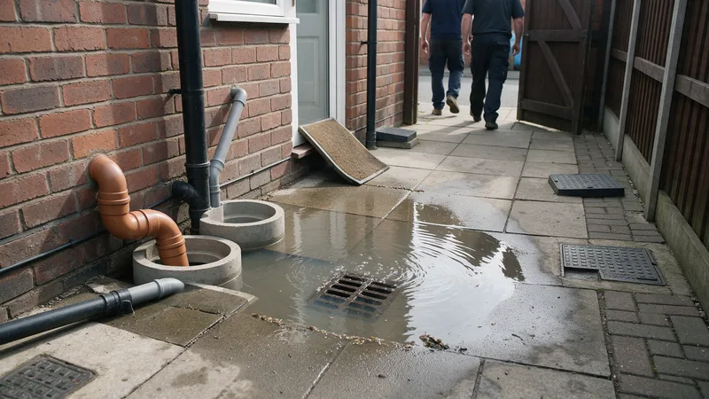

Urgent help
Stop using the water. Then ring.
Everything in the house goes down the same run. If that run is blocked, every flush, every bath and every washing machine cycle adds to what already has nowhere to go. Turning the water off at the taps is the one thing that buys you time, and it costs nothing.
A demo number from the range Ofcom keeps for television and film. It rings nobody. The urgent line on this demo is a sample Sample and no response time is promised anywhere on this site.
First ten minutes
Do this before anybody arrives.
Do
- Stop using water anywhere in the house. No flushing, no taps, no washing machine, no dishwasher, no shower.
- Lift the chamber cover outside if you can do it safely, and look. Full to the top means the blockage is down the run. Empty means it is between the house and that chamber.
- Put towels across the bathroom door and move what you can off the floor.
- Keep children and pets away from anything that has come up, and keep your hands out of it.
- Take a photo of the chamber and of where the water is. It is the quickest way for us to know what we are coming to.
Do not
- Do not flush again to see if it has cleared. That is the single most common way a slow toilet becomes a wet floor.
- Do not pour drain chemicals down a run that is already full. They sit on top doing very little, and then somebody has to put their hands in it.
- Do not put a hose down the drain to try to push it through. On a blocked run the water comes back at you, and it comes back through the lowest opening in the house.
- Do not stand in it. Waste water is not just water, and a wet floor over tiles is a fall waiting to happen.
- Do not lift a heavy cast iron cover on your own if it does not want to move. It is not worth a back or a finger.
Three common ones
What it probably is.
Blocked toilet
The pan fills, rises and drops back slowly, or does not drop back at all. Stop flushing. Then look in the chamber outside: full means the blockage is down the run, empty means it is in the few feet between the toilet and that chamber. If other things in the house are slow too, it is the run.
Drain overflowing in the yard
Grey water sitting on the flags, spreading from the gully, usually towards the back door because that is where the ground falls. That is the run telling you it is full. Stop the water going in, keep everybody off it, and ring. A hose will make it worse, not better.
Sewage smell, or waste backing up
A strong smell with nothing visible is often a trap that has dried out or a gully that has silted up so it cannot seal. A smell with waste water appearing is a blocked run and it needs clearing now. If it is coming up inside the house, treat it as unsafe and tell us when you ring.

Generated photoGenerated for this demo. Not a photograph of a real job.
Why it spreads
Water finds the lowest opening.
When a run is blocked, the waste water in it has to go somewhere, and it leaves at the lowest point it can find. In most houses that is an outside gully, a ground floor shower tray or a downstairs toilet.
That is why a blockage you cannot see outside can turn up in a shower tray inside, and it is why stopping the water going in matters more than anything else you can do in the first ten minutes.
It is also the honest reason we ask you not to flush again. One more flush is another seven litres into a pipe that is already full.
Also worth knowing
Two things that are not ours.
If it might be the water company's
If the chamber at your boundary is full, or if the run is shared with neighbours and everybody on it has the same problem at once, it may well be the water company's to deal with and there may be nothing for you to pay. Your local water company has a number for exactly this, and they answer it around the clock.
We will tell you if that is what we think, before anybody starts work. It happens more often than you would expect.
If water is near anything electrical
Waste water near sockets, a fuse board or anything plugged in is an electrical problem before it is a drainage one. Switch that circuit off at the board if you can reach it from somewhere dry, leave it off, and tell us when you ring so we know what we are walking into.
If you are not sure it is safe, get an electrician to it first. The drain will wait half an hour.
Questions
In the middle of it.
Everything downstairs is slow at once. What does that mean?
That it is the run outside rather than any one fitting. A single slow basin is a trap or a short branch. A slow toilet, a slow bath and a gurgling sink together means the shared run they all drain into is blocked.
Stop using the water and go and look in the chamber. That is the quickest way to narrow it down before we even get there.
Is it safe to stay in the house?
If waste water is only outside, yes, as long as everybody stays off it and you stop putting water down the drains.
If it has come up inside, keep people and pets out of that room, do not walk through it in socks or bare feet, and wash hands properly after anything you touch. If it is near sockets or the fuse board, treat it as an electrical hazard first.
Can I pour something down it while I wait?
We would not. On a run that is already full, drain chemicals sit on top of the blockage achieving very little, and they then have to be dealt with by whoever clears it.
Boiling water down a kitchen sink can shift a fat blockage that is only just forming. On an actual blockage it will not, and on older pipework and plastic traps it is not a brilliant idea either.
What will you do when you get here?
Lift the covers from the house outwards until we find the one that is full, then clear it from the chamber below it, then jet the run back to full bore.
After that we would normally put a camera down it so you can see what caused it, because a run that has blocked once is worth understanding. If it turns out to be past your boundary we will tell you that and point you at the water company.
Need somebody out?
Tell us what it is doing and your postcode and we will book someone in. If waste water is coming up now, ring the urgent line instead of filling in a form.